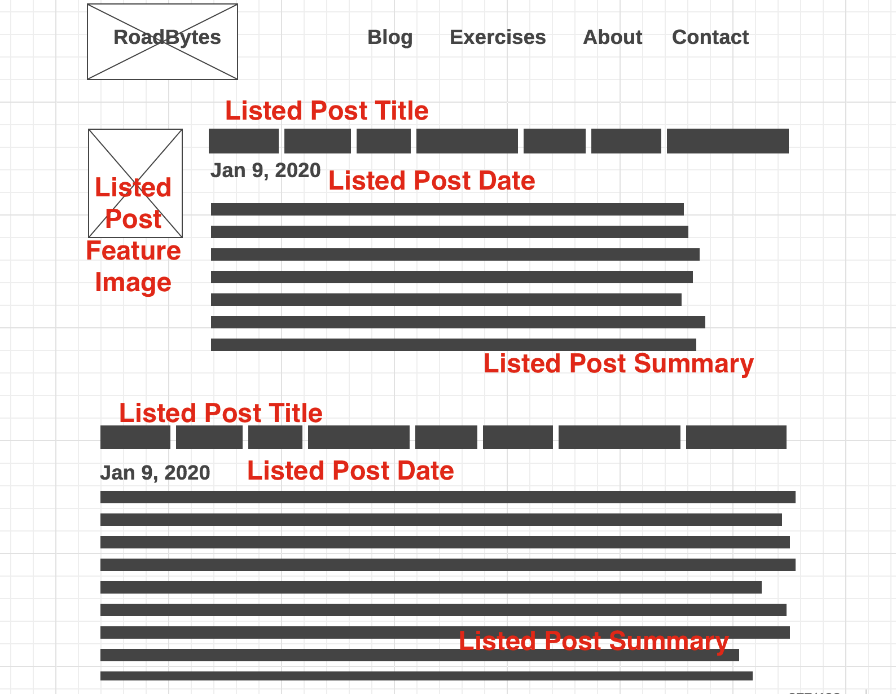

Organizing my Stylesheets
<19 Jul 2016>
Objective:
- Review how I learned to style my blog
- BEM naming.
- Show how I implemented Bourbon, Neat, and Bitters.
Applying BEM
I just learned about Block-Element-Modifier (BEM) naming of classes and I’m applying it with ThoughBot’s Sass framework (Bourbon, Neat, and Bitters) to my blog site.
I love this idea. It helps me wrap my head around the design of the app and organize the css. Let’s say you want to create a blog that lists the posts in the index page and you’ve mocked up these elements.

Determining class names
You’ll notice the Title of the listed post styling might be different if there is a corresponding image or not. The classes of this blog page can then be represented like this:
- .listed-post
- .listed-post__date
- .listed-post__title
-
.listed-post__summary
- .listed-post–with-image
- .listed-post–with-image__title
- .listed-post–with-image__summary
Applying precise styling
So, for listed-post__summary, the span could go across the whole page:
.listed-post__summary {
// insert span 12 styling here
}
and if there is an image, it can share the row:
.listed-post--with-image__image {
// insert span 3 styling here
}
.listed-post--with-image__summary {
// insert span 9 styling here
}
Seeing the light with precision styling
One thing that was interesting was it helped me see the difference between setting up classes for a predetermined mock up “object” in my blog, and having a general styling for specific element tags.
For example, we just set up the images in the listed posts, but that doesn’t affect images that don’t have classes. Let’s say we wanted all images centered, then we can still do that by setting attributes for the img tags.
.listed-post--with-image__image {
// insert span 3 styling here
display: block;
margin: 0;
// this would have the image pushed to the left
}
// somewhere else in the stylesheet
img {
display: block;
margin: auto;
// this would have the image centered
}
I’m sure this is a feature of having classes in general, but I didn’t see the percision of the naming and style selection until I implemented this BEM model. By seeing the difference between two different post mockups and setting up the naming accrodingly, I was able to then see it applied between different classes and groups.
Organizing files!
Applying Bourbon, Neat, and Bitters
To start I initially had trouble differentiating what Bourbon, Neat, and Bitters were respectively.
Here’s some info from ThoughtBot
Bourbon is a library of vanilla Sass mixins, Neat gives us a responsive grid system, and Bitters sets default styles for Bourbon projects. These gems will make the assets available to our site through Middleman’s asset pipeline.
In summary:
- sass, makes css easier to work with
- among many other things, it also has a way to have “methods” or
@mixinsthat take arguments and insert it into the “block”.
- among many other things, it also has a way to have “methods” or
- bourbon, adds methods to make development more efficient, USING SASS
@mixinfeature- some mixins include
marginandpadding
- some mixins include
- neat, adds grids also using sass mixins
- some mixins include
outer-containerandspan-columns()
- some mixins include
- bitters resets all styling to default
- sets neat’s initial settings to with a
base/file configured
- sets neat’s initial settings to with a
This was really confusing at first, so I went back and tried to nail down my understanding of HTML, and CSS to see how these tools are used in context. Also upcase is great too in explaining bourbon.
For organizing the files, bourbon has an all.css.scss file that calls to import css in various locations. This helps break files up into manageable chucks and not on GIANT file to scroll through.
// my all.css.scss file
@charset "utf-8";
@import "normalize";
@import "highlight";
@import "bourbon";
@import "base/base"; /* Bitters needs to be imported before Neat */
@import "neat";
@import "partials/*";
@import "components/*";
Notice @import "components/*";, pulls in every file in the component folder. This allows us make files named after the Blocks in our BEM models.
// looking at the component 'blocks'
stylesheets/
...
components/
listed-post.scss
post.scss
nav.scss
footer.scss
In Conclusion
So yeah, that’s how I can make sense of my styling for the blog. At least that’s how it works right now, July 2016. I like the idea of starting with a wireframe, then naming parts with sensible names. This allows the BEM model and class make up to fit right in, and the file styling to work in conjunction with everything else.